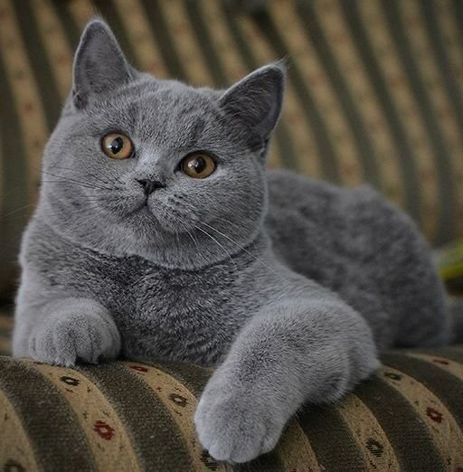
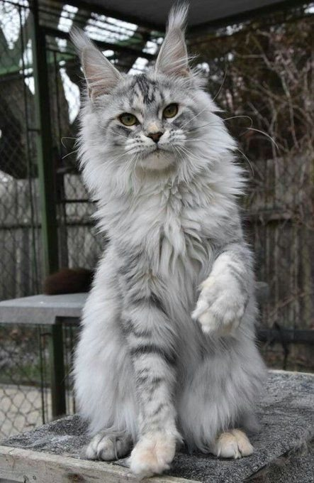
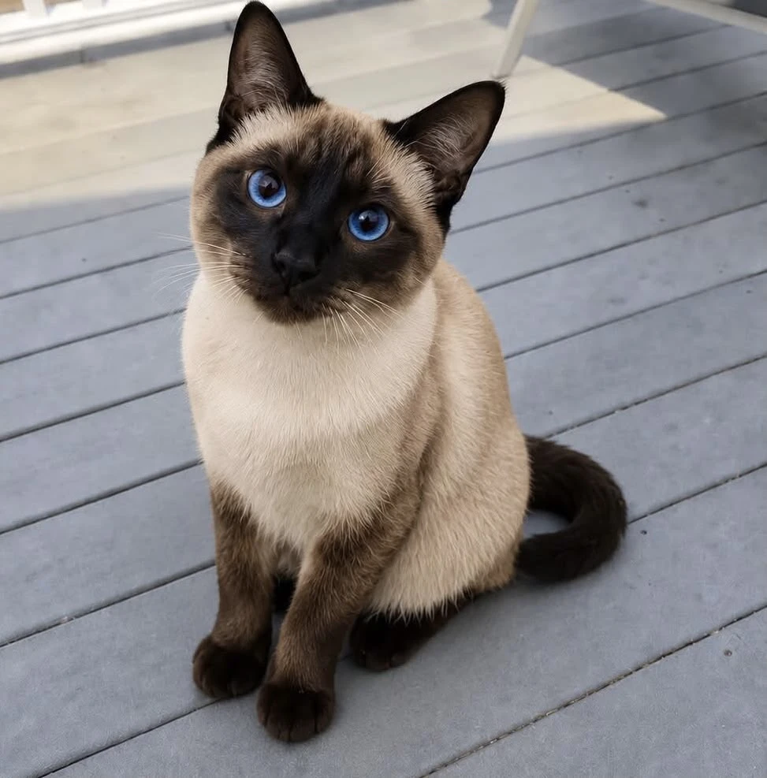
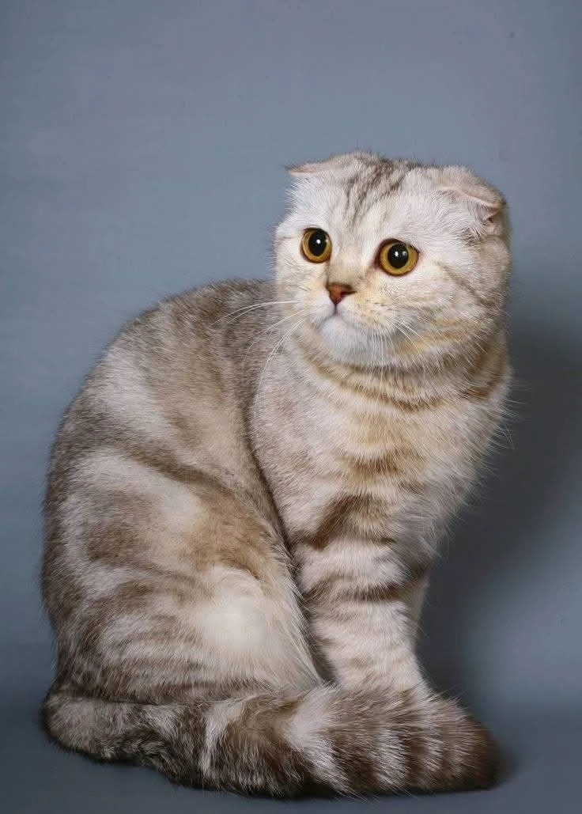
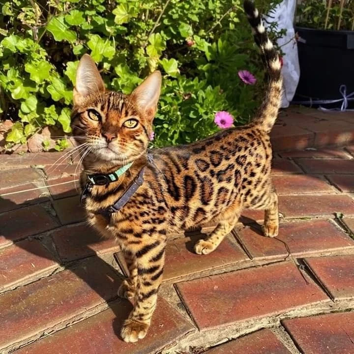
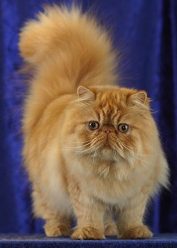

Кожному — свого кота
Буває так: ви побачили фото пухнастого красеня з бурштиновими очима — і серце вже все вирішило. Але кіт — не картинка з календаря. Це жива істота зі своїм характером, звичками й потребами, і те, що одному господареві здається милою рисою, іншого може зовсім виснажити.
Не всі коти підходять усім людям — і це цілком нормально. Одні породи обожнюють компанію й сумують, коли лишаються на самоті навіть на кілька годин. Інші спокійно чекають господаря з роботи, згорнувшись клубочком на підвіконні. Комусь потрібен простір для перегонів і лазіння, а комусь вистачає затишного кутка й м'якої лежанки. Довгошерстим красеням нелегко в спеку, а короткошерсті теплолюбні коти мерзнуть у прохолодній оселі. Одних треба розчісувати щодня, інших — лише час від часу погладжувати.
У кожної людини теж свої умови: графік роботи, розмір квартири, клімат за вікном, діти чи інші тварини в домі, бажання тиші або, навпаки, веселої метушні. Коли характер кота збігається з ритмом вашого життя, народжується справжня дружба — довга, тепла й щаслива для обох.
Ці запитання допоможуть вам підібрати кота
Відмітьте варіанти, які найбільше схожі на ваше життя, і натисніть «Готово». Ми порівняємо відповіді з характером і потребами шести порід і підкажемо, хто з них почуватиметься поруч із вами найщасливіше.

Вам підійде
Британська короткошерста
Спокійна, врівноважена й самодостатня — справжній аристократ у плюшевій шубці. Британська кішка терпляче чекатиме вас із роботи, не влаштовуючи безладу, а ввечері охоче вмоститься поруч на дивані. Коротку щільну шерсть легко доглядати, а з дітьми та іншими тваринами британці ладнають мирно й з гідністю.
Пам'ятайте: британці схильні до зайвої ваги, тож стежте за порціями й не забувайте про ігри.
Історія породи →

Вам підійде
Мейн-кун
Добродушний велетень із китичками на вухах і розкішним пухнастим хвостом. Мейн-кун любить усю родину, терплячий до дітей і замість гучного нявкання тихенько «цвірінькає». Йому потрібні простір, міцне високе дряпало й розчісування кілька разів на тиждень — зате натомість ви отримаєте відданого, розумного й неймовірно лагідного друга.
Густа шерсть добре гріє, тож мейн-куну затишно навіть у прохолодній оселі.
Історія породи →

Вам підійде
Сіамська
Елегантна, жвава й надзвичайно балакуча — сіамська кішка всюди ходитиме за вами й «розповідатиме» про все на світі. Вона щиро прив'язується до людини, тому найщасливіша там, де господар багато часу проводить удома. Коротка шерсть майже не потребує догляду, а теплолюбна натура робить її ідеальною компаньйонкою для теплої оселі.
Сіамці не люблять самотності й нудьги — даруйте їм увагу та побільше іграшок.
Історія породи →

Вам підійде
Шотландська висловуха
М'яка, спокійна й зворушлива, з крихітними вушками, загнутими вперед, — шотландська висловуха ніби створена для затишних вечорів під пледом. Вона любить людей, але не вимагає безперервних ігор, тихо почувається в квартирі й добре ладнає з дітьми.
Важливо: ген, що дає загнуті вушка, може впливати на суглоби, тому кішку варто регулярно показувати ветеринару й брати лише у відповідального заводчика.
Історія породи →

Вам підійде
Бенгальська
Маленький домашній леопард у золотистій плямистій шубці. Бенгальська кішка енергійна, допитлива й дуже розумна: вона вивчає команди, ходить на повідку й не відмовиться погратися з водою. Їй потрібні простір, полиці для лазіння та господар, який із радістю проводитиме час у грі.
Без руху й уваги бенгали швидко нудьгують, тож готуйтеся до активних щоденних забав.
Історія породи →

Вам підійде
Перська
Ніжна, тиха й розкішна — перська кішка найбільше любить відпочивати поруч із господарем у спокійній оселі. Її пишна шерсть — справжня окраса, але водночас і щоденна турбота: розчісувати перса треба кожного дня.
Через пласку мордочку персам важко в спеку, тому найкомфортніше їм у помірному або прохолодному кліматі.
Історія породи →
Це лише підказка: характер кожного кота неповторний, а повністю безпечних для алергіків порід не існує. І не забувайте про притулки — там на свій дім чекають чудові безпородні коти, такі ж ласкаві й віддані.